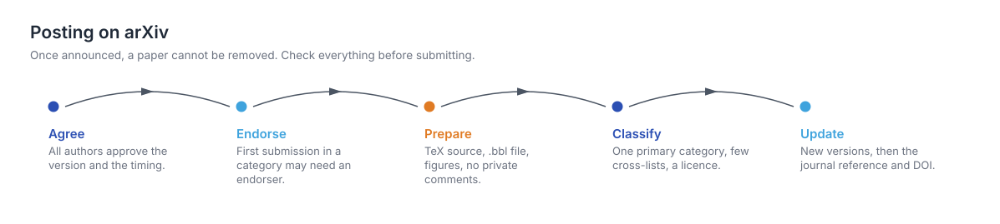

Guides · Publishing
Posting a preprint on arXiv
How to prepare, submit and update a preprint on arXiv. Accounts and endorsement, choosing categories, licences, TeX source, versions, and the link with journal submission.
Path · Getting it published · step 1 of 6
Next in this path: Choosing a journal →
arXiv is the main preprint server for mathematics, physics, computer science and several neighbouring fields. Posting there makes your work visible immediately, establishes a public date, and lets readers find it before the journal version appears.
Before you submit#
- Check the journal policy. Almost all mathematics journals accept papers already posted on arXiv. Check the policy of your target journal anyway, especially in other fields.
- Agree with your co-authors. All authors must agree on the version, the title, the abstract and the timing.
- Polish the paper. The first version is the one most people will read. Do not post a rough draft.
Account and endorsement#
You need an arXiv account. To submit to a category for the first time, you may need an endorsement: a confirmation from an established author in that category that you are part of the research community. arXiv has tightened this system over time, and an institutional email address on its own is no longer enough to be endorsed automatically in many cases. Read the current endorsement page on arXiv before your first submission. The usual route is to ask your supervisor or a co-author who already publishes in the category.
Choosing categories#
- Choose one primary category, the one that best describes the paper. In mathematics, categories look like
math.AG(algebraic geometry),math.NT(number theory),math.PR(probability). - Add cross-lists only when the paper is genuinely relevant to another community. Too many cross-lists may be removed by moderators.
- Look at where similar papers are posted.
Preparing the files#
- Submit the TeX source, not only a PDF. arXiv compiles it with its own TeX installation.
- Include all files needed:
.tex,.bbl(the compiled bibliography), figures, custom style files. - Remove unused files, comments you do not want public, and hidden notes. Comments in TeX source can be downloaded by anyone.
- Use standard packages. Compile locally with a clean, recent TeX distribution before uploading.
- Make figures in PDF or PNG for pdfLaTeX.
Metadata#
- Title and abstract: the abstract field is plain text with limited TeX. Keep mathematics simple.
- Authors: in the order agreed by all authors.
- Comments field: number of pages and figures, and later the journal reference ("To appear in ...").
- MSC classes for mathematics, and keywords.
Licence#
arXiv asks you to choose a licence. The default arXiv licence gives arXiv the right to distribute the paper and leaves other rights to you. Creative Commons licences (such as CC BY) allow wider reuse. Some funders require a specific open licence. Check your funder's rules before choosing. A licence cannot be withdrawn once the paper is announced.
Moderation and announcement#
Submissions are checked by moderators and announced on a fixed daily schedule. A paper may be reclassified to another category or put on hold. Once announced, a paper cannot be removed. It can only be withdrawn, and the earlier versions stay visible.
Versions#
- Post a new version when you correct errors or when the journal version is accepted. Each version keeps its number (v1, v2, v3).
- Add a short note in the comments field explaining the change.
- After acceptance, update the journal reference and the DOI fields.
- Respect the journal's rules about posting the final accepted manuscript.
After posting#
- Add the arXiv number to your CV and web page.
- Send the link to researchers who will be interested, with a short personal note.
- Submit to the journal. Most journals let you submit directly from the arXiv identifier.
Checklist#
- All co-authors approved the version and the timing.
- I have an endorsement for the primary category if needed.
- The TeX source compiles cleanly and contains no private comments.
- I chose the licence deliberately.
- I will update the journal reference after acceptance.
Discussion
Questions, corrections and your own experience are welcome. Comments live in the forum, on GitHub Discussions, with Markdown and LaTeX.